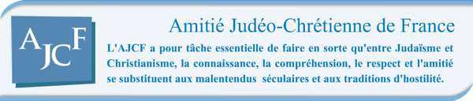
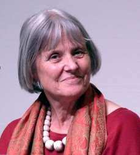
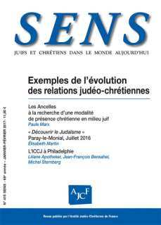

Depuis près d’un mois se trouve sur notre site un nouveau document juif, intitulé Entre Jérusalem et Rome, que nous a fait parvenir le Grand Rabbin de Strasbourg, René Gutman (qu’il en soit une fois de plus remercié !) et dont vous avez certainement tous pu mesurer l’importance : voulant célébrer à son tour le 50e anniversaire de la déclaration conciliaire Nostra Aetate, cette Déclaration de la Conférence des Rabbins Européens sur les relations entre judaïsme et catholicisme (mais en réalité bien plus largement entre judaïsme et christianisme) est donc venue s’ajouter aux deux déclarations juives de l’automne 2015. Elle fera date, elle aussi, et même sans doute plus largement puisqu’elle s’adresse à tous les juifs orthodoxes d’Europe et a été approuvée par le conseil des rabbins d’Amérique. Voilà donc un beau cadeau pour cette fin d’année 2016 ! Puisse l’année qui commence nous donner de faire fructifier cette fraternité enfin retrouvée pour le plus grand bénéfice de notre monde ! Ce sont là les vœux que je nous souhaite à tous. Et puisque, dans le petit village suisse de Seelisberg, des chrétiens et des juifs ont posé, il y a tout juste 70 ans, les bases de la redécouverte de cette fraternité, puissions-nous, durant l’année 2017, ne cesser de la renforcer et de l’approfondir !
Jacqueline Cuche
Entre Jérusalem et Rome

Le premier numéro de l’année 2017 propose diverses contributions qui illustrent d’une certaine manière l’état des relations judéo-chrétiennes et montrent combien elles tendent, aujourd’hui, à se réaliser dans un respect mutuel authentique.
Paule Marx, en historienne, retrace, dans un grand article, ce qu’a été la spécificité d’une branche peu connue de la Congrégation des Sœurs de Sion, celle des “Ancelles”.
Ce même numéro publie les comptes rendus de deux réunions du début de l’été 2016, importantes pour l’approfondissement des relations entre Juifs et Chrétiens. La première est la session “Découvrir le Judaïsme” qui s’est déroulée dans le cadre des rassemblements d’été de Paray-le-Monial animés par la communauté de l’Emmanuel et proposant cette année à des jeunes (de 25 à 35 ans) de découvrir le judaïsme à partir du thème: « La miséricorde à la lumière de la tradition juive ». La seconde est la réunion annuelle de l’ICCJ [l’Amitié Judéo- Chrétienne internationale] à Philadelphie (États-Unis) autour du thème « La dynamique du pluralisme religieux dans le monde qui change ».
[Lire la suite] [Abonnement et achat au numéro]